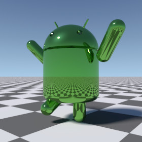

![[Thumbnail which links to a demo image]](androidrobot.jpg "Larger demo image") AndroidRobot is a library module from the
Persistence of Vision Ray Tracer (POV-Ray)
Object Collection
that defines a 3-D model of Google’s
Android™ robot,
with posable head and limbs.
AndroidRobot is a library module from the
Persistence of Vision Ray Tracer (POV-Ray)
Object Collection
that defines a 3-D model of Google’s
Android™ robot,
with posable head and limbs.
AndroidRobot is a library module from the
Persistence of Vision Ray Tracer (POV-Ray)
Object Collection
that defines a 3-D model of Google’s
Android™ robot,
with posable head and limbs.
The italicized nnnnnn in some of the file names represents the 6-digit number that is in the name of the .zip file.
| Key Files | |
|---|---|
| File | Description |
androidrobot.html |
The user manual (this document) |
androidrobot.inc |
The AndroidRobot software |
androidrobot.povandroidrobot_posed.pov
|
Scene description files demonstrating use of AndroidRobot |
androidrobot.jpgandroidrobot_posed.jpgandroidrobot_thumbnail.png
|
Sample output images |
| Administrative Files | |
| File | Description |
READMEnnnnnn.html |
Important information about using the POV-Ray Object Collection
Caveat: This README file contains the text: “You may use images that you generate using these files without restriction.” For the AndroidRobot module, the Google license overrides this README clause. Google Inc. retains all trademark rights to the Android robot. |
androidrobot_description.txt |
A brief description of AndroidRobot |
androidrobot_keywords.txt |
A list of keywords |
androidrobot_prereqs.txt |
Prerequisites (empty file) |
androidrobot.css |
Other administrative files |
cc-LGPL-a.png |
|
Versionnnnnnn.js |
|
Note for users of older versions of AndroidRobot: Files androidrobot_cc-lgpl.png and droid.pov are no longer used, and androidrobot.png has been replaced with androidrobot.jpg.
AndroidRobot requires POV-Ray version 3.5 or later.
All file names in this module and all global and local identifiers defined in androidrobot.inc comply fully with the Object Collection naming standards, as revised August 2008 and proposed August 2012. The reserved prefixes for this module are “AndroidRobot” and “Droid,” including any uppercase and lowercase variants. To avoid conflicts, do not introduce into your scene description file any identifiers with these names, or any identifiers that start with these names plus an underscore.
The identifier View_POV_Include_Stack from the standard include file debug.inc is referenced by androidrobot.inc; debug.inc itself is not used.
assumed_gamma in global_settings{} prior to the next step, or you will get a parse error.
#include "androidrobot.inc"Including the file more than once is harmless, though unnecessary.
Creates an untextured robot. The robot faces the x-direction and the
bottom of the robot is at ANDROIDROBOT_V_BASE.
| Formal Parameter | Type | Description |
|---|---|---|
Use_merge |
float/Boolean | If yes, the robot will be composed using CSG merge. If no, then CSG union will be used. In general, pass yes if the robot is to be transparent, no otherwise. |
Returns the radius (float) of the eyes’ cylindrical sockets.
Returns the point (vector) where the central axis of the left eye’s cylindrical socket intersects the dome of the head.
Returns the dome on which the robot’s head is based. This is useful for developing eyes or other facial features.
| Formal Parameter | Type | Description |
|---|---|---|
Outset |
float | An amount by which the dome is larger or smaller than the head. Zero returns a dome the same size as the head, a positive number returns a larger dome, and a negative number returns a smaller dome. |
Returns a transformation that is suitable for facial features. Apply this macro to facial features if you have applied a transformation to the robot’s head with macro AndroidRobot_Posed(). (Do not apply the head’s transformation directly to the facial features, as this will not work properly for some transformations.)
| Formal Parameter | Type | Description |
|---|---|---|
x_Head |
transformation | The transformation to be applied to the facial features. Typically, this should be the same as the x_Head argument passed to AndroidRobot_Posed(). |
union
{ AndroidRobot_Posed
( no, MyHeadRotation,
transform{}, transform{}, transform{}, transform{}
)
union
{ object { UserDefinedEye translate AndroidRobot_Eye_v() }
object { UserDefinedEye translate AndroidRobot_Eye_v() * <1, 1, -1> }
// transform { MyHeadRotation } // Wrong!
AndroidRobot_Head_x (MyHeadRotation) // Correct
}
pigment { ANDROIDROBOT_C_COLOR }
}
See the demo scene file androidrobot_posed.pov for a complete example.
Creates an untextured posable robot.

See the demo scene file androidrobot_posed.pov for an example of how to use this.
For backward compatibility, AndroidRobot_posed() is also accepted.
| Formal Parameter | Type | Description |
|---|---|---|
Use_merge |
float/Boolean | If yes, the robot will be composed using CSG merge. If no, then CSG union will be used. In general, pass yes if the robot is to be transparent, no otherwise. |
x_Head |
transformation | The transformation to be applied to the head. The origin is at the neck. |
x_Left_arm |
transformation | The transformation to be applied to the left arm. The origin is at the shoulder. |
x_Right_arm |
transformation | The transformation to be applied to the right arm. The origin is at the shoulder. |
x_Left_leg |
transformation | The transformation to be applied to the left leg. The origin is at the hip. |
x_Right_leg |
transformation | The transformation to be applied to the right leg. The origin is at the hip. |
Sets the values of the Android Web color variables ANDROIDROBOT_C_COLOR and ANDROIDROBOT_C_RAWCOLOR. Google has changed the official color, and this macro allows you to revert to the previous color.
| Formal Parameter | Type | Description |
|---|---|---|
Version |
float |
|
This parameter may be #declared by the user prior to using the macros.
| Parameter | Type | Description | Default |
|---|---|---|---|
AndroidRobot_Version |
float | A backwards compatibility setting to select the modeling of the robot according to the version of AndroidRobot:
|
4.01 |
| Identifier | Type | Description | Value |
|---|---|---|---|
ANDROIDROBOT_C_COLOR |
color | The gamma-adjusted official Android Web color. Use this if:
Warning: If you are using POV-Ray 3.62 or older, the gamma adjustment will be incorrect if | #78C257 * |
ANDROIDROBOT_C_RAWCOLOR |
color | The official Android Web color, without gamma adjustment. Use this if:
|
rgb <120, 194, 87> / 255 * |
ANDROIDROBOT_HEIGHT |
float | The height of the unposed robot, not including the antennae. | 1.65 |
ANDROIDROBOT_V_BASE |
3-D vector | The location of the bottom of the unposed robot. | <0, -0.55, 0> |
* This value may be changed with macro AndroidRobot_Set_color().
The short prefix from AndroidRobot 1.0 has been reinstated as of version 4.0. The following table lists the identifiers that have short form alternatives.
| Long Form | Short Form |
|---|---|
AndroidRobot |
Droid |
ANDROIDROBOT_C_COLOR |
DROID_C_COLOR |
ANDROIDROBOT_C_RAWCOLOR |
DROID_C_RAWCOLOR |
AndroidRobot_Eye_radius |
Droid_Eye_radius |
AndroidRobot_Eye_v |
Droid_Eye_v |
AndroidRobot_Head |
Droid_Head |
AndroidRobot_Head_x |
Droid_Head_x |
ANDROIDROBOT_HEIGHT |
DROID_HEIGHT |
AndroidRobot_Posed |
Droid_Posed |
AndroidRobot_Set_color |
Droid_Set_color |
ANDROIDROBOT_V_BASE |
DROID_V_BASE |
The following identifier has no short form:
Any identifiers in androidrobot.inc that are not documented in this manual are considered “private” or “protected,” and are subject to change or elimination in a future update.

| Version | Date | Notes |
|---|---|---|
| 1.0 | 2009 October 30 |
|
| 2.0 | 2011 July 23 |
|
| 2.1 | 2012 June 26 |
|
| 2.1a | 2012 June 28 |
|
| 2.2 | 2014 October 5 |
|
| 3.0 | 2015 April 25 |
|
| 3.0a | 2015 April 27 |
|
| 4.0 | 2018 September 23 |
|
| 4.0.1 | 2019 March 21 |
|
Google has published a new SVG image since AndroidRobot 3.0a was released. The new image appears virtually indistinguishable from the old, except for the color and the lack of a white border. Upon close visual inspection, it appears very slightly different. However, the new SVG file is much harder to examine than the file posted to Wikimedia, and I do not believe such minor changes would be worth the effort to update the POV model.
{kind=link}
{kind=link}